The steps in this lesson are for use with Visual Studio 2005 and .NET 2.0. You can use Smart Tags that are available in the .NET 2.0 Designer to hook into your MDB file. This tutorial is strictly a designer tutorial. You do not have to write even a single line of code.
1. From the Syncfusion tab in the toolbox, drag a Grid Grouping control onto your form.
2. In the Grid Grouping control smart tag, click the Choose Data Source drop down. Then click the Add Project Data Source link in the drop down.
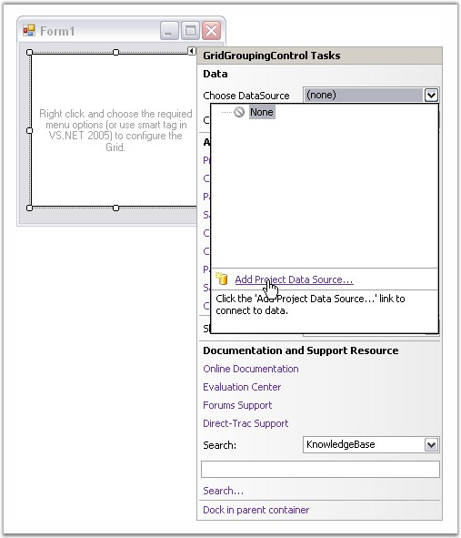
Figure 26: Choosing a Data Source from the Smart Tag
3. In the Data Source Configuration Wizard that appears, select DataBase and click Next.
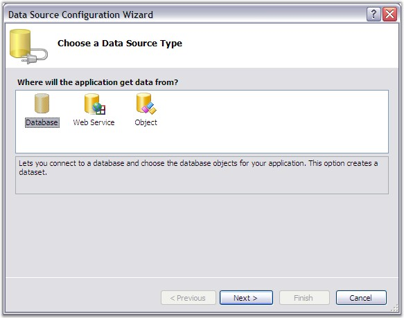
Figure 27: Choosing a Data Source Type
4. Click New Connection. The Add Connection dialog box will be displayed.
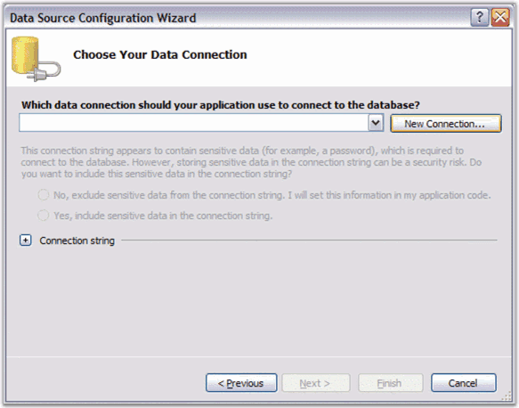
Figure 28: Choosing the Data Connection
5. In the Add Connection dialog box, click Change button. This opens the Change Data Source dialog box.
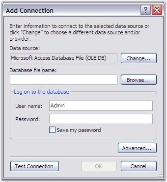
Figure 29: Add Connection Dialog Box
6. In the Change Source dialog box, select the Microsoft Access DataBase File option, and then click OK.
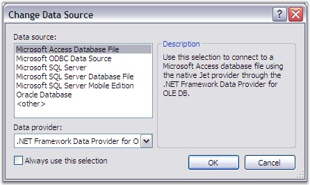
Figure 30: Choosing the Data Source
7. The Add Connection dialog box will be opened without the DataBase file name entry set. Click Browse button and browse to the following path: C:\Syncfusion\EssentialStudio\[Version Number]\Windows\Data\NWIND.mdb (this path will vary according to your installation location). Click OK.
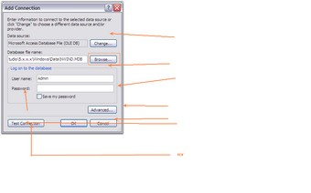
Figure 31: Add Connection Dialog Box
8. Click New Connection to choose your data connection. Click Next.
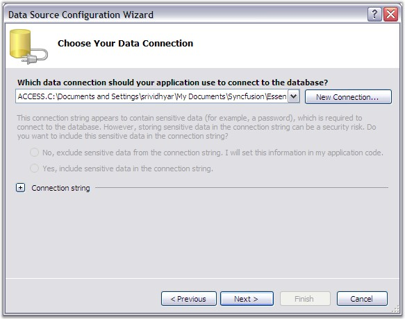
Figure 32: Database Connection Window
9. Click No to indicate that you do not want to save the MDB in the project.
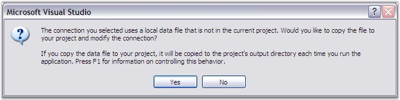
Figure 33: Pop-up Window displayed on clicking the Next Button
The following screen appears.
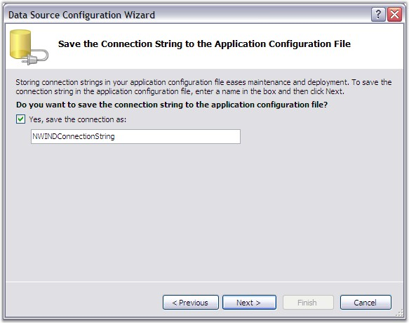
Figure 34: Connection String Dialog
10. Click Next to choose your Database Objects. Select the Tables that you want. Click Finish.
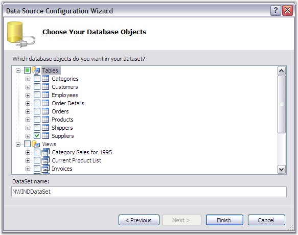
Figure 35: New Access File Connection
The columns in the Grid Grouping control will now get populated as depicted in the following screen shot.
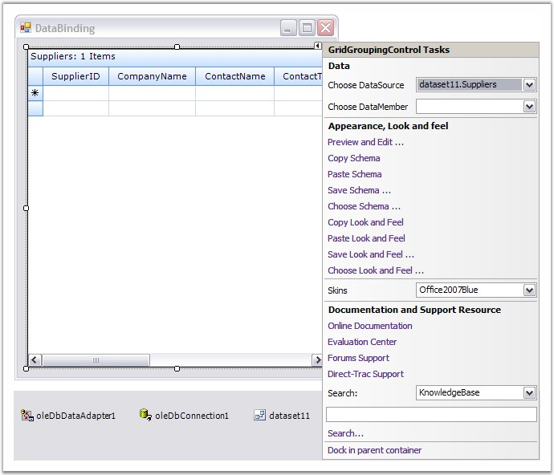
Figure 36: After setting the Data Source
11. Finally, set the Anchor property of the Grid Grouping control to All, so that the Grid Grouping control can be easily sized with the form. This is depicted in the following screen shot.
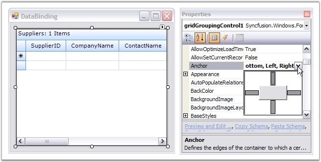
Figure 37: Setting the Anchor Property
12. To allow grouping at run time, the Grid Grouping control displays a drop panel onto which the user can drag columns to be grouped. To display this drop panel, you need to set the ShowGroupDropArea property to true as shown in the following screen shot.
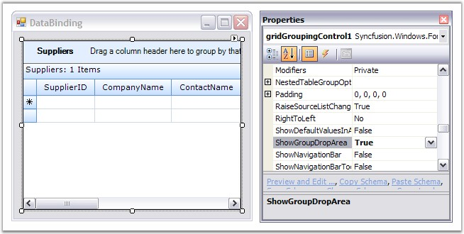
Figure 38: Adding the Group Drop Area
13. Run the application to see the Grid Grouping control display the data from the MDB file (without having written a single line of code). Your form should look similar to the one in the following screen shot.
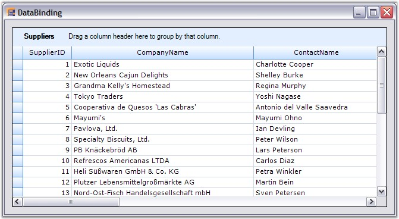
Figure 39: Application showing Grid Grouping control with Data
14. To group by CompanyName, click on the CompanyName column header and drag it to the drop area as illustrated in the following screen shot.
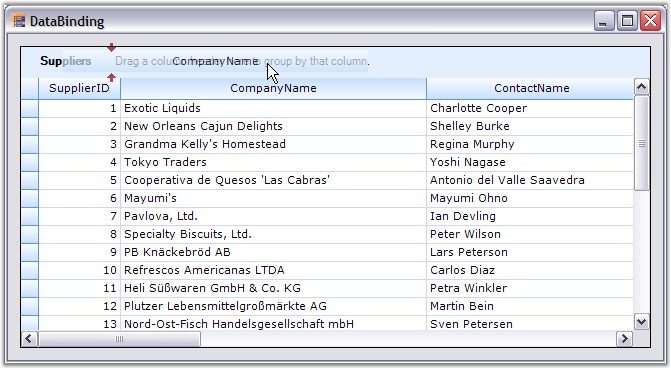
Figure 40: Grouping by the CompanyName Column
Notice that each set of grouped values has its own "Caption" row and its own "AddNew" row (*). Each group has its own PlusMinus cell that will let you expand/collapse the group.
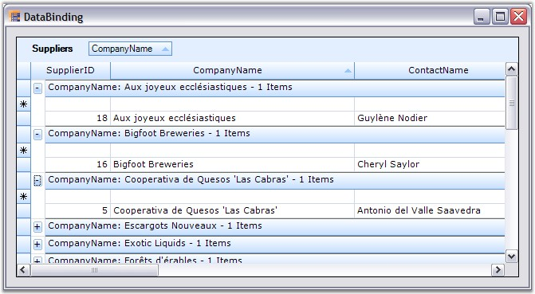
Figure 41: Grouped Grid
 Note: For more details, refer the following
browser sample:
Note: For more details, refer the following
browser sample:
C:\Syncfusion\EssentialStudio\[Version Number]\Windows\Grid.Grouping.Windows\Samples\2.0\GettingStarted\Data Binding VS 2005 Demo